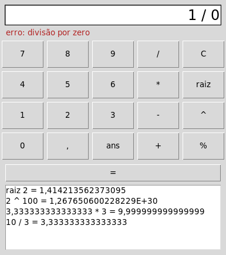

DOMINANDO O PYTHON EM 1 ANO
Gabarito comentado das 52 aulas, do #01 ao #52
Python 3.13 · 9 módulos · 80 questões · 1 desafio integrador
Autor Desconhecido · theknowledgeisle.com
| Módulo | Tema | Aulas | Questões |
|---|---|---|---|
| MÓDULO 1 | Fundamentos da Linguagem | #01–#06 | Q1–Q10 |
| MÓDULO 2 | Estruturas de Dados e Algoritmos | #07–#12 | Q11–Q20 |
| MÓDULO 3 | Orientação a Objetos | #13–#18 | Q21–Q30 |
| MÓDULO 4 | Arquivos, I/O e Banco de Dados | #19–#24 | Q31–Q40 |
| MÓDULO 5 | Python para Web | #25–#30 | Q41–Q50 |
| MÓDULO 6 | Automação e Scripts | #31–#34 | Q51–Q56 |
| MÓDULO 7 | Data Science e Machine Learning | #35–#42 | Q57–Q66 |
| MÓDULO 8 | Testes, Qualidade e Boas Práticas | #43–#47 | Q67–Q74 |
| MÓDULO 9 | Projetos Reais e Carreira | #48–#52 | Q75–Q80 |
| DESAFIOS | Projetos integradores | todas | D1 |
Artigos 01 a 06
Explique o Zen do Python e cite 3 princípios
Explique com suas próprias palavras o que é o Zen do Python e cite 3 de seus princípios.
Dica: Execute: python3 -c "import this"
O Zen do Python é a filosofia oficial da linguagem, escrita por Tim Peters e acessível via 'import this'.
Três princípios centrais:
1. Explícito é melhor que implícito — prefira código que deixa clara sua intenção.
2. Simples é melhor que complexo — evite soluções complicadas quando existe uma mais direta.
3. Legibilidade conta — código é lido muito mais vezes do que escrito.
Outros importantes: 'Bonito é melhor que feio', 'Plano é melhor que aninhado',
'Se a implementação é difícil de explicar, é uma má ideia'.
Diferença entre tipagem dinâmica e estática
Qual a diferença entre tipagem dinâmica e tipagem estática? Dê um exemplo em Python.
Dica: Pense em como Python atribui tipos automaticamente.
Tipagem estática (Java, C): o tipo é declarado na definição da variável e verificado em tempo de compilação.
Tipagem dinâmica (Python): o tipo é inferido automaticamente a partir do valor atribuído.
Em Python:
x = 10 # int x = 'texto' # agora é str — válido!
Isso permite código mais conciso mas exige atenção para não misturar tipos inadvertidamente.
Type hints (PEP 484) permitem anotar tipos sem tornar a linguagem estaticamente tipada.
O que o código imprime?
O que o código abaixo imprime? Justifique.
x = 10
y = 3
print(x // y)
print(x % y)
print(x ** y)
print(x / y)Dica: Analise cada linha antes de executar.
x = 10, y = 3
x // y → 3 (divisão inteira — descarta a parte decimal)
x % y → 1 (módulo — resto da divisão: 10 = 3×3 + 1)
x ** y → 1000 (potenciação: 10³ = 1000)
x / y → 3.3333... (divisão real — sempre retorna float em Python 3)
Diferença importante: em Python 2, 10/3 = 3 (divisão inteira era padrão).
Python 3 corrigiu isso — / sempre retorna float.
Truthy ou falsy
Sem executar, classifique cada valor abaixo como truthy ou falsy. Depois rode e explique os que você errou.
0 0.0 "" "0" " " [] [0] [[]] None set() "False" float("nan")Dica: Só coleções vazias, zeros, None e False são falsy.
valores = [0, 0.0, "", "0", " ", [], [0], [[]], None, set(), "False", float("nan")]
for v in valores:
print(f"{v!r:>14} → {'truthy' if v else 'falsy'}") 0 → falsy
0.0 → falsy
'' → falsy
'0' → truthy
' ' → truthy
[] → falsy
[0] → truthy
[[]] → truthy
None → falsy
set() → falsy
'False' → truthy
nan → truthyFalsy são só os "vazios": zeros (0, 0.0), coleções vazias ("", [], set()), None e False. As pegadinhas: "0", " " e "False" são strings não vazias; [0] e [[]] são listas com um elemento (não importa qual); e float("nan") é diferente de zero, portanto verdadeiro. Em objetos seus, quem decide é __bool__ ou, na falta dele, __len__.
A variável que sobrevive ao laço e o for/else
O que o trecho abaixo imprime, e por quê? Em seguida, explique o else do for e use-o para escrever eh_primo(n), listando os primos menores que 30.
for i in range(3):
pass
print(i)Dica: O else do laço roda quando ele termina sem break.
for i in range(3):
pass
print(i) # a variável do laço sobrevive ao laço
def eh_primo(n: int) -> bool:
if n < 2:
return False
for d in range(2, int(n ** 0.5) + 1):
if n % d == 0:
break # achou divisor: o else NÃO roda
else:
return True # o laço terminou sem break
return False
print([n for n in range(30) if eh_primo(n)])2
[2, 3, 5, 7, 11, 13, 17, 19, 23, 29]Imprime 2: em Python o laço não cria escopo, e i continua existindo com o último valor. O else do for roda quando o laço chega ao fim sem break: em eh_primo, isso quer dizer que nenhum divisor foi encontrado. Testar só até a raiz de n basta, porque todo divisor maior tem um par menor que ela.
O argumento padrão mutável
A função abaixo tem um dos bugs mais famosos do Python. Mostre o que acontece ao chamá-la duas vezes seguidas, explique a causa e corrija.
def adicionar(item, lista=[]):
lista.append(item)
return listaDica: Quando o valor padrão de um parâmetro é criado?
def adicionar(item, lista=[]): # o padrão é criado UMA vez, quando o def roda
lista.append(item)
return lista
print(adicionar(1))
print(adicionar(2)) # surpresa: a mesma lista da chamada anterior
def adicionar_certo(item, lista=None):
if lista is None:
lista = [] # uma lista nova a cada chamada
lista.append(item)
return lista
print(adicionar_certo(1))
print(adicionar_certo(2))[1]
[1, 2]
[1]
[2]O valor padrão é avaliado uma vez, quando o def é executado, e não a cada chamada. Todas as chamadas que não passam lista compartilham o mesmo objeto, e ele vai acumulando. A correção idiomática usa None como sentinela e cria a lista dentro da função. O mesmo vale para {}, set() e qualquer objeto mutável.
O que é escopo LEGB?
O que é escopo LEGB? Escreva um exemplo que demonstre um conflito de escopo.
Dica: L=Local, E=Enclosing, G=Global, B=Built-in
LEGB define a ordem em que Python busca variáveis:
L (Local) — dentro da função atual
E (Enclosing) — funções que envolvem a atual (closures)
G (Global) — nível do módulo
B (Built-in) — nomes nativos: print, len, range...
Exemplo de conflito:
x = 'global'
def externa():
x = 'enclosing'
def interna():
x = 'local'
print(x) # 'local' — L ganha
interna()
print(x) # 'enclosing'
externa()
print(x) # 'global'Diferença entre == e is
Qual a diferença entre '==' e 'is'? Quando usar cada um? Dê exemplos.
Dica: is compara identidade de objeto na memória.
== compara o CONTEÚDO (valor) dos objetos.
is compara a IDENTIDADE (endereço de memória) — se são o mesmo objeto.
Uso correto:
if x == 10: # valor — correto para comparar dados if x is None: # identidade — correto para None, True, False if x == None: # funciona, mas a PEP 8 recomenda is
Armadilha: inteiros pequenos (-5 a 256) são cacheados pelo Python, então a == b e a is b podem ser True simultaneamente nesse range.
Função com *args e **kwargs
Escreva uma função com *args e **kwargs que receba qualquer número de argumentos e os imprima formatados.
Dica: Explore args como tupla e kwargs como dicionário.
def mostrar_tudo(*args, **kwargs):
"""
*args → tupla com argumentos posicionais
**kwargs → dicionário com argumentos nomeados
"""
print("Posicionais:")
for i, v in enumerate(args, 1):
print(f" {i}: {v!r}")
print("Nomeados:")
for k, v in kwargs.items():
print(f" {k} = {v!r}")
mostrar_tudo(1, 'texto', [1,2], nome='Ana', idade=25)
# Posicionais:
# 1: 1
# 2: 'texto'
# 3: [1, 2]
# Nomeados:
# nome = 'Ana'
# idade = 25★ Fibonacci recursivo vs iterativo
Implemente a sequência de Fibonacci usando recursão e compare com a versão iterativa. Qual é mais eficiente? Por quê?
Recursivo: mais legível, mas O(2^n) sem memoization — recalcula subproblemas.
Iterativo: O(n) tempo e O(1) espaço — muito mais eficiente.
Com @lru_cache, o recursivo fica O(n) também, mas usa O(n) de memória.
from functools import lru_cache
# Recursivo puro — O(2^n) — lento para n grande
def fib_recursivo(n):
if n <= 1: return n
return fib_recursivo(n-1) + fib_recursivo(n-2)
# Recursivo com memoization — O(n)
@lru_cache(maxsize=None)
def fib_memo(n):
if n <= 1: return n
return fib_memo(n-1) + fib_memo(n-2)
# Iterativo — O(n) tempo, O(1) espaço — mais eficiente
def fib_iterativo(n):
if n <= 1: return n
a, b = 0, 1
for _ in range(2, n+1):
a, b = b, a + b
return b
print(fib_iterativo(50)) # 12586269025 — instantâneoArtigos 07 a 12
Diferença entre list.sort() e sorted()
Qual a diferença entre list.sort() e sorted()? Em quais situações você preferiria cada um?
Dica: Uma modifica a lista in-place, a outra retorna nova lista.
list.sort(): modifica a lista IN-PLACE, retorna None, só funciona em listas.
sorted(): retorna uma NOVA lista ordenada, não modifica o original, funciona em qualquer iterável.
Quando usar cada um:
sort() — quando você quer modificar a lista e não precisa do original.
sorted() — quando precisa preservar o original, ou está ordenando strings, tuplas, generators.
Ambos aceitam key= e reverse=. A complexidade é O(n log n) — Timsort.
Reescrever loop com list comprehension
Reescreva o código abaixo usando list comprehension em uma única linha.
resultado = []
for n in range(1, 21):
if n % 2 == 0:
resultado.append(n ** 2)# Forma original (4 linhas)
resultado = []
for n in range(1, 21):
if n % 2 == 0:
resultado.append(n ** 2)
# Com list comprehension (1 linha)
resultado = [n**2 for n in range(1, 21) if n % 2 == 0]
# Resultado: [4, 16, 36, 64, 100, 144, 196, 256, 324, 400]O que acontece ao modificar uma tupla?
O que acontece ao tentar modificar uma tupla? Por que esse comportamento é útil?
Dica: Tente: t = (1,2,3); t[0] = 10
Python lança TypeError: 'tuple' object does not support item assignment.
Por que imutabilidade é útil:
1. Pode ser usada como chave de dicionário (listas não podem).
2. Protege dados que não devem mudar (coordenadas, cores RGB, configurações).
4. Sinaliza intenção ao leitor — esses dados não mudam.
Atenção: uma tupla contendo uma lista ainda permite modificar a lista internamente.
t = ([1,2], 'a') → t[0].append(3) # válido! a tupla em si não mudou.
Contar frequência de caracteres com dicionário
Use um dicionário para contar a frequência de cada caractere na string abaixo.
frase = "python e uma linguagem incrivel"Dica: Use dict.get() com valor padrão 0.
frase = "python e uma linguagem incrivel"
# Método 1 — dict com get()
frequencia = {}
for char in frase:
frequencia[char] = frequencia.get(char, 0) + 1
# Método 2 — dict comprehension
frequencia = {c: frase.count(c) for c in set(frase)}
# Método 3 — Pythônico com Counter
from collections import Counter
frequencia = Counter(frase)
# Top 5 mais comuns:
print(Counter(frase).most_common(5))
# [('e', 3), (' ', 4), ('a', 3), ('i', 3), ('n', 3)]Diferença entre set.remove() e set.discard()
Explique com um exemplo prático a diferença entre set.remove() e set.discard().
Dica: O que acontece quando o elemento não existe?
s = {1, 2, 3}
# remove() — levanta KeyError se elemento não existe
try:
s.remove(99) # KeyError: 99
except KeyError as e:
print(f"Erro: {e}")
# discard() — silencioso se elemento não existe
s.discard(99) # Não faz nada, sem erro
s.discard(2) # Remove 2 normalmente
print(s) # {1, 3}
# Regra: use discard() quando não tem certeza se o elemento existe.Busca binária iterativa com complexidade
Implemente a busca binária iterativa. Qual sua complexidade de tempo e por quê?
Dica: Divida o espaço de busca pela metade a cada iteração.
Complexidade: O(log n) — a cada iteração divide o espaço de busca pela metade.
Para 1 bilhão de elementos: no máximo 30 comparações. Comparado a O(n) busca linear = 1 bilhão.
def busca_binaria(lista, alvo):
"""
Busca binária iterativa — O(log n).
Requer lista ordenada.
"""
esquerda, direita = 0, len(lista) - 1
while esquerda <= direita:
meio = (esquerda + direita) // 2 # int do Python não estoura
if lista[meio] == alvo:
return meio # encontrado — retorna índice
elif lista[meio] < alvo:
esquerda = meio + 1 # alvo está à direita
else:
direita = meio - 1 # alvo está à esquerda
return -1 # não encontrado
ordenada = [2, 5, 8, 12, 16, 23, 38, 56]
print(busca_binaria(ordenada, 23)) # 5
print(busca_binaria(ordenada, 10)) # -1Verificar parênteses balanceados com pilha
Escreva uma função que use uma pilha (list) para verificar se uma expressão tem parênteses balanceados.
Dica: Push ao abrir, pop ao fechar. Compara pares.
def balanceado(expressao: str) -> bool:
"""
Verifica balanceamento de (), [] e {}.
Usa pilha (list) para controlar abertura/fechamento.
"""
pilha = []
pares = {')': '(', '}': '{', ']': '['}
abre = set(pares.values())
for char in expressao:
if char in abre:
pilha.append(char) # empilha abertura
elif char in pares:
if not pilha or pilha[-1] != pares[char]:
return False # fechamento sem abertura ou par errado
pilha.pop() # desempilha
return len(pilha) == 0 # vazio = tudo fechado
print(balanceado("(a + [b * c])")) # True
print(balanceado("(a + [b * c)")) # False
print(balanceado("{[()]}")) # True
print(balanceado("{[(]}")) # FalseExpressão regular para validar e-mails
Escreva uma expressão regular que valide e-mails no formato usuario@dominio.com.
Dica: Use o módulo re. Considere pontos, hífens e underscores.
import re
# usuário: letras, dígitos e . _ % + -; domínio: um ou mais rótulos separados por ponto
PADRAO_EMAIL = re.compile(r"[\w.%+-]+@(?:[A-Za-z0-9-]+\.)+[A-Za-z]{2,}")
def validar_email(email: str) -> bool:
return PADRAO_EMAIL.fullmatch(email) is not None
testes = [
"usuario@email.com",
"nome.sobrenome@co.com.br",
"user+tag@dominio.org",
"invalido",
"sem@dominio",
"@semuser.com",
"dois@@arrobas.com",
]
for t in testes:
print(f"{validar_email(t)!s:5} — {t}")True — usuario@email.com
True — nome.sobrenome@co.com.br
True — user+tag@dominio.org
False — invalido
False — sem@dominio
False — @semuser.com
False — dois@@arrobas.comO domínio precisa aceitar vários rótulos separados por ponto (co.com.br), por isso o grupo (?:[A-Za-z0-9-]+\.)+. fullmatch exige que o padrão cubra a string inteira, sem precisar de ^ e $. Nenhuma regex valida e-mail de verdade: a única prova de que o endereço existe é mandar uma mensagem e o dono confirmar.
Merge Sort passo a passo para [5, 2, 8, 1, 9]
Explique o funcionamento do Merge Sort com um exemplo passo a passo para a lista [5, 2, 8, 1, 9].
Dica: Divisão e conquista recursiva.
Merge Sort — Divisão e Conquista — O(n log n) garantido:
1. Dividir até listas de 1 elemento:
[5, 2, 8, 1, 9]
[5, 2, 8] [1, 9]
[5, 2] [8] [1] [9]
[5] [2]
2. Mesclar comparando elementos um a um:
merge([5],[2]) → [2, 5]
merge([2,5],[8]) → [2, 5, 8]
merge([1],[9]) → [1, 9]
merge([2,5,8],[1,9]) → [1, 2, 5, 8, 9]
Estável: mantém ordem relativa de iguais. Usa O(n) de memória extra.
★ Árvore Binária de Busca completa
Implemente uma Árvore Binária de Busca com os métodos inserir(), buscar() e percurso_em_ordem(). Demonstre com os valores [10, 5, 15, 3, 7, 20].
BST: para cada nó, todos os valores à esquerda são menores, à direita são maiores.
Busca em O(log n) para árvores balanceadas, O(n) no pior caso (degenerada).
Percurso em-ordem retorna os valores em ordem crescente.
class No:
def __init__(self, valor):
self.valor = valor
self.esq = self.dir = None
class BST:
def __init__(self):
self.raiz = None
def inserir(self, valor):
self.raiz = self._inserir(self.raiz, valor)
def _inserir(self, no, valor):
if no is None: return No(valor)
if valor < no.valor: no.esq = self._inserir(no.esq, valor)
elif valor > no.valor: no.dir = self._inserir(no.dir, valor)
return no
def buscar(self, valor):
no = self.raiz
while no:
if valor == no.valor: return True
no = no.esq if valor < no.valor else no.dir
return False
def em_ordem(self):
resultado = []
def _visitar(no):
if no:
_visitar(no.esq)
resultado.append(no.valor)
_visitar(no.dir)
_visitar(self.raiz)
return resultado
arvore = BST()
for v in [10, 5, 15, 3, 7, 20]:
arvore.inserir(v)
print(arvore.em_ordem()) # [3, 5, 7, 10, 15, 20]
print(arvore.buscar(7)) # True
print(arvore.buscar(99)) # FalseArtigos 13 a 18
Encapsulamento: _ vs __
O que é encapsulamento? Qual a diferença entre atributo com _ e com __ em Python?
Dica: Name mangling: __attr vira _Classe__attr.
Encapsulamento = esconder detalhes internos, expondo apenas interface necessária.
_atributo — convenção 'protegido': não acesse de fora, mas tecnicamente possível.
__atributo — 'privado' via name mangling: Python renomeia para _Classe__atributo.
Evita colisão em herança, mas ainda acessível (com esforço).
Boa prática: use _atributo para internal e @property para acesso controlado.
Use __ apenas quando herança pode criar conflitos reais de nome.
Classe ContaBancaria com property e validação
Crie uma classe ContaBancaria com saldo privado, métodos depositar(), sacar() e saldo (property). Valide valores negativos.
Dica: Use @property para controle de acesso ao saldo.
class ContaBancaria:
def __init__(self, titular: str, saldo_inicial: float = 0):
if saldo_inicial < 0:
raise ValueError("Saldo inicial não pode ser negativo.")
self.titular = titular
self._saldo = saldo_inicial
@property
def saldo(self) -> float:
return self._saldo
def depositar(self, valor: float) -> None:
if valor <= 0:
raise ValueError("Valor de depósito deve ser positivo.")
self._saldo += valor
print(f"Depositado R${valor:.2f}. Saldo: R${self._saldo:.2f}")
def sacar(self, valor: float) -> None:
if valor <= 0:
raise ValueError("Valor de saque deve ser positivo.")
if valor > self._saldo:
raise ValueError(f"Saldo insuficiente. Disponível: R${self._saldo:.2f}")
self._saldo -= valor
print(f"Sacado R${valor:.2f}. Saldo: R${self._saldo:.2f}")
conta = ContaBancaria("Ana", 1000)
conta.depositar(500)
conta.sacar(200)
print(conta.saldo) # 1300Diferença entre __repr__ e __str__
O que é o método __repr__ e quando ele é chamado? Como difere de __str__?
Dica: repr() vs str() — quando cada um é usado?
__str__: representação legível para humanos — chamado por print() e str().
__repr__: representação técnica/desambígua — chamado no console e por repr().
Idealmente, eval(repr(obj)) deve recriar o objeto.
Se só __repr__ estiver definido, str() usa-o como fallback.
Se só __str__ estiver definido, repr() usa o default (<Classe object at 0x...>).
Regra prática: sempre defina __repr__. Defina __str__ quando quiser exibição diferente.
class Ponto:
def __init__(self, x, y):
self.x, self.y = x, y
def __repr__(self):
return f"Ponto({self.x!r}, {self.y!r})" # técnico
def __str__(self):
return f"({self.x}, {self.y})" # amigável
p = Ponto(3, 4)
print(str(p)) # (3, 4)
print(repr(p)) # Ponto(3, 4)Princípio de Liskov e violação com herança
Explique o princípio de Liskov e mostre um exemplo de violação com herança em Python.
Dica: Subclasse deve poder substituir a superclasse.
O Princípio de Substituição de Liskov diz que um objeto da subclasse deve poder entrar onde o programa espera a classe-mãe, sem quebrar o que ela promete. O exemplo clássico é o quadrado: matematicamente "é um" retângulo, mas um retângulo promete que largura e altura mudam independentemente, e um quadrado não pode cumprir isso.
class Retangulo:
def __init__(self, largura: float, altura: float):
self._largura = largura
self._altura = altura
@property
def largura(self) -> float:
return self._largura
@largura.setter
def largura(self, v: float) -> None:
self._largura = v
@property
def altura(self) -> float:
return self._altura
@altura.setter
def altura(self, v: float) -> None:
self._altura = v
def area(self) -> float:
return self.largura * self.altura
class Quadrado(Retangulo): # VIOLAÇÃO do LSP
def __init__(self, lado: float):
super().__init__(lado, lado)
@Retangulo.largura.setter
def largura(self, v: float) -> None:
self._largura = self._altura = v # para continuar quadrado, mexe nas duas
def dobrar_largura(r: Retangulo) -> None:
"""Contrato de Retangulo: dobrar a largura dobra a área."""
area_antes = r.area()
r.largura *= 2
assert r.area() == 2 * area_antes, f"área foi de {area_antes} para {r.area()}"
dobrar_largura(Retangulo(2, 3))
print("Retangulo: ok")
try:
dobrar_largura(Quadrado(3))
except AssertionError as e:
print("Quadrado:", e)Retangulo: ok
Quadrado: área foi de 9 para 36A saída: não herdar. Quadrado e Retangulo podem ser classes independentes que satisfazem um Protocol com area(), ou imutáveis (sem setters, a promessa que quebrava deixa de existir). Sinal de violação: a subclasse precisa desligar ou distorcer um comportamento da mãe.
Decorador @medir_tempo
Implemente um decorador @medir_tempo que calcula e imprime o tempo de execução de qualquer função.
Dica: Use time.perf_counter() e @wraps.
import time
from functools import wraps
def medir_tempo(func):
@wraps(func) # preserva __name__ e __doc__ da função original
def wrapper(*args, **kwargs):
inicio = time.perf_counter()
try:
return func(*args, **kwargs)
finally: # mede mesmo se a função levantar exceção
print(f"[{func.__name__}] {(time.perf_counter() - inicio) * 1000:.2f} ms")
return wrapper
@medir_tempo
def soma_grande(n):
return sum(range(n))
def _fib(n):
return n if n <= 1 else _fib(n - 1) + _fib(n - 2)
@medir_tempo # decorar a recursiva mediria (e imprimiria) cada uma das 2,7 milhões de chamadas
def fibonacci(n):
return _fib(n)
print(soma_grande(1_000_000))
print(fibonacci(30))[soma_grande] 10.06 ms
499999500000
[fibonacci] 108.44 ms
832040O try/finally garante a medição mesmo quando a função levanta exceção, e o @wraps mantém o nome e a docstring da função original (sem ele, todas se chamariam wrapper). Decorar a própria fib recursiva seria um erro: o decorador envolve cada chamada recursiva, e fib(30) imprimiria 2.692.537 linhas. Os tempos variam de máquina para máquina.
@classmethod vs @staticmethod
Qual a diferença entre @classmethod e @staticmethod? Crie um exemplo com cada um na mesma classe.
Dica: classmethod recebe cls; staticmethod não recebe self nem cls.
class Temperatura:
def __init__(self, celsius: float):
self.celsius = celsius
# classmethod — recebe a CLASSE como primeiro arg (cls)
# Usado para construtores alternativos (factory methods)
@classmethod
def de_fahrenheit(cls, f: float) -> 'Temperatura':
return cls((f - 32) * 5/9)
@classmethod
def de_kelvin(cls, k: float) -> 'Temperatura':
return cls(k - 273.15)
# staticmethod — não recebe self nem cls
# Função utilitária relacionada à classe, mas independente
@staticmethod
def celsius_para_fahrenheit(c: float) -> float:
return c * 9/5 + 32
def __repr__(self):
return f"{self.celsius:.1f}°C"
t1 = Temperatura.de_fahrenheit(212)
print(t1) # 100.0°C
print(Temperatura.celsius_para_fahrenheit(100)) # 212.0Hierarquia de exceções para sistema de pagamentos
Crie uma hierarquia de exceções customizadas para um sistema de pagamentos: ErroBase, ErroValidacao, ErroSaldoInsuficiente, ErroCartaoBloqueado.
Dica: Herde de Exception. Adicione atributos relevantes.
class ErroPagamento(Exception):
"""Exceção base do domínio de pagamentos."""
class ErroValidacao(ErroPagamento):
def __init__(self, campo: str, mensagem: str):
self.campo = campo
self.mensagem = mensagem
super().__init__(f"Validação falhou: '{campo}' — {mensagem}")
class ErroSaldoInsuficiente(ErroPagamento):
def __init__(self, saldo: float, solicitado: float):
self.saldo = saldo
self.solicitado = solicitado
super().__init__(
f"Saldo insuficiente: R${saldo:.2f} / Solicitado: R${solicitado:.2f}"
)
class ErroCartaoBloqueado(ErroPagamento):
def __init__(self, motivo: str = ""):
self.motivo = motivo
super().__init__(f"Cartão bloqueado. {motivo}")
# Uso
try:
raise ErroSaldoInsuficiente(50.0, 200.0)
except ErroPagamento as e: # captura qualquer erro do domínio
print(e)Corrigir herança errada usando composição
Quando usar composição ao invés de herança? Reescreva o exemplo abaixo usando composição.
class Motor(Veiculo): # errado!
def ligar(self): ...
def desligar(self): ...Dica: Relação 'tem um' → composição. 'é um' → herança.
# ERRADO — Motor herda de Veiculo (Motor NÃO É um Veiculo)
class Motor(Veiculo): # Errado!
...
# CORRETO — Composição: Veiculo TEM UM Motor
class Motor:
def __init__(self, potencia_cv: int):
self.potencia = potencia_cv
self._ligado = False
def ligar(self) -> str:
self._ligado = True
return f"Motor {self.potencia}cv ligado."
def desligar(self) -> str:
self._ligado = False
return "Motor desligado."
class Veiculo:
def __init__(self, modelo: str, motor: Motor):
self.modelo = modelo
self._motor = motor # composição — TEM UM Motor
def ligar(self): return self._motor.ligar()
def desligar(self): return self._motor.desligar()
carro = Veiculo("Civic", Motor(150))
print(carro.ligar()) # Motor 150cv ligado.@dataclass com validação em __post_init__
Use @dataclass para criar uma classe Produto com nome, preco e estoque. Adicione um método desconto() e valide preco >= 0 em __post_init__.
Dica: from dataclasses import dataclass, field
from dataclasses import dataclass, field
@dataclass
class Produto:
nome: str
preco: float
estoque: int = 0
codigo: str = field(default="", repr=False)
def __post_init__(self):
if self.preco < 0:
raise ValueError(f"Preco nao pode ser negativo: {self.preco}")
if len(self.nome) < 2:
raise ValueError("Nome deve ter ao menos 2 caracteres.")
self.nome = self.nome.strip().title()
def desconto(self, percentual: float) -> 'Produto':
"""Retorna novo produto com desconto aplicado."""
novo_preco = self.preco * (1 - percentual / 100)
return Produto(self.nome, round(novo_preco, 2), self.estoque)
def disponivel(self) -> bool:
return self.estoque > 0
p = Produto("teclado mecanico", 450.00, 15)
print(p) # Produto(nome='Teclado Mecanico', preco=450.0, estoque=15)
print(p.desconto(10)) # Produto(nome='Teclado Mecanico', preco=405.0, estoque=15)★ Singleton com decorator
Implemente o padrão Singleton usando um decorator. Em seguida, crie uma classe ConfiguracaoApp que use o decorator e demonstre que múltiplas instâncias são o mesmo objeto.
from functools import wraps
def singleton(cls):
"""Decorator que garante única instância da classe."""
instancias = {}
@wraps(cls)
def obter_instancia(*args, **kwargs):
if cls not in instancias:
instancias[cls] = cls(*args, **kwargs)
return instancias[cls]
return obter_instancia
@singleton
class ConfiguracaoApp:
def __init__(self):
self.debug = False
self.versao = "1.0.0"
self.tema = "claro"
def __repr__(self):
return f"Config(versao={self.versao}, debug={self.debug})"
# Demonstração
c1 = ConfiguracaoApp()
c2 = ConfiguracaoApp()
print(c1 is c2) # True — mesmo objeto!
c1.debug = True
print(c2.debug) # True — mesma instância
print(id(c1) == id(c2)) # TrueArtigos 19 a 24
Vantagem do 'with open()'
Qual a vantagem de usar 'with open(...)' em vez de open()/close() manualmente? O que acontece se uma exceção ocorrer?
Dica: O context manager garante fechamento mesmo com erros.
O 'with' usa um context manager que garante o fechamento do arquivo ao sair do bloco, mesmo que uma exceção ocorra. Equivale a try/finally com f.close() no finally.
Sem 'with': se uma exceção ocorrer entre open() e close(), o arquivo fica aberto, causando vazamento de recursos e possível corrupção de dados.
Leitura de CSV e geração de relatório JSON
Escreva um script que leia um arquivo CSV de alunos (nome, nota) e gere um relatório JSON com média, maior e menor nota.
Dica: Use csv.DictReader e json.dump com indent=2.
import csv, json
from pathlib import Path
def gerar_relatorio(csv_path: str, json_path: str) -> dict:
alunos = []
with open(csv_path, encoding='utf-8') as f:
for row in csv.DictReader(f):
alunos.append({'nome': row['nome'], 'nota': float(row['nota'])})
notas = [a['nota'] for a in alunos]
relat = {
'total': len(alunos),
'media': round(sum(notas)/len(notas), 2),
'maior': max(notas),
'menor': min(notas),
'aprovados': sum(1 for n in notas if n >= 6),
}
Path(json_path).write_text(
json.dumps(relat, indent=2, ensure_ascii=False),
encoding='utf-8'
)
return relatdatetime naive vs aware
O que é um datetime 'naive' vs 'aware'? Por que essa distinção importa em sistemas distribuídos?
Dica: Pense em fusos horários e servidores em diferentes regiões.
Naive: sem informação de fuso horário (tzinfo=None). Ambíguo para sistemas distribuídos.
Aware: com fuso horário definido (tzinfo preenchido). Comparações são seguras.
Em sistemas distribuídos (servidores em diferentes fusos):
naive: '2024-03-15 14:00' — qual fuso? São Paulo? UTC? Nova York?
aware: '2024-03-15T14:00:00-03:00' — inequívoco.
Boa prática: armazene sempre em UTC, exiba no fuso do usuário.
Use: datetime.now(tz=ZoneInfo('UTC')) para criar aware.
Os 5 melhores de cada turma
Escreva uma query SQL que liste, para cada turma, os 5 alunos com maior média de notas, com a posição de cada um na turma.
Dica: Com LIMIT 5 a lista inteira para em 5 linhas; para cortar dentro de cada turma, use uma função de janela.
WITH medias AS (
SELECT t.nome AS turma, a.nome AS aluno, ROUND(AVG(n.valor), 2) AS media,
ROW_NUMBER() OVER (PARTITION BY t.id ORDER BY AVG(n.valor) DESC) AS posicao
FROM alunos a
JOIN turmas t ON t.id = a.turma_id
JOIN notas n ON n.aluno_id = a.id
GROUP BY t.id, t.nome, a.id, a.nome
)
SELECT turma, posicao, aluno, media
FROM medias
WHERE posicao <= 5
ORDER BY turma, posicao;Testada no SQLite com duas turmas (seis alunos na A, três na B), a consulta devolve:
A | 1 | Caio | 9.5
A | 2 | Ana | 8.5
A | 3 | Eva | 8.0
A | 4 | Bia | 7.0
A | 5 | Davi | 5.5
B | 1 | Gil | 9.0
B | 2 | Ines | 8.5
B | 3 | Hugo | 7.0O ROW_NUMBER() OVER (PARTITION BY ...) numera os alunos de cada turma separadamente, do maior para o menor, e o WHERE posicao <= 5 corta dentro de cada turma: o Fabio, sexto da A, fica de fora. Um ORDER BY ... LIMIT 5 no fim pararia nas cinco primeiras linhas do resultado inteiro, todas da turma A. Funções de janela existem no SQLite desde a 3.25, no PostgreSQL e no MySQL 8.
SQL Injection — ataque e prevenção
O que é SQL Injection? Como o uso de parâmetros (?) previne esse ataque? Dê um exemplo do ataque e da prevenção.
Dica: Nunca concatene strings para montar SQL!
SQL Injection: o atacante insere código SQL malicioso via input de usuário.
ATAQUE: SELECT * FROM users WHERE email = '' OR '1'='1' --'
Isso retorna TODOS os usuários sem senha!
PREVENÇÃO — nunca concatene strings para montar SQL:
# ERRADO — vulnerável!
query = f"SELECT * FROM users WHERE email = '{email}'"
cursor.execute(query)
# CORRETO — parâmetros escapam automaticamente
cursor.execute(
"SELECT * FROM users WHERE email = ?",
(email,) # SQLite
)
# PostgreSQL / psycopg2:
cursor.execute(
"SELECT * FROM users WHERE email = %s",
(email,)
)
# SQLAlchemy ORM — seguro por padrão
session.execute(select(User).where(User.email == email))threading vs multiprocessing vs asyncio
Explique a diferença entre threading, multiprocessing e asyncio. Para cada um, cite um caso de uso ideal.
Dica: I/O vs CPU vs alta concorrência.
threading: concorrência via threads, GIL limita paralelismo CPU.
Ideal para: I/O bound com código legado ou bibliotecas não-async.
multiprocessing: paralelismo real via processos separados, sem GIL.
Ideal para: CPU bound — cálculos, processamento de imagem, ML.
asyncio: concorrência cooperativa em único thread via event loop.
Ideal para: I/O massivo — APIs, scrapers, websockets (alta escala).
Resumo: I/O simples → threading; I/O em escala → asyncio; CPU → multiprocessing.
Buscar 5 URLs em paralelo com asyncio + httpx
Escreva uma função assíncrona que busque dados de 5 URLs em paralelo usando asyncio.gather() e httpx.
Dica: Use async with httpx.AsyncClient() as client.
import asyncio, httpx
async def buscar(client: httpx.AsyncClient, url: str) -> dict:
resp = await client.get(url, timeout=10.0)
return {'url': url, 'status': resp.status_code, 'bytes': len(resp.content)}
async def buscar_paralelo(urls: list[str]) -> list[dict]:
async with httpx.AsyncClient() as client:
tarefas = [buscar(client, url) for url in urls]
resultados = await asyncio.gather(*tarefas, return_exceptions=True)
return [r for r in resultados if isinstance(r, dict)]
urls = [
'https://httpbin.org/get',
'https://jsonplaceholder.typicode.com/posts/1',
'https://api.github.com',
'https://viacep.com.br/ws/01310100/json/',
'https://httpbin.org/status/200',
]
resultados = asyncio.run(buscar_paralelo(urls))
for r in resultados:
print(f"{r['status']} — {r['url'][:40]}")Padrão Repository com Protocol
O que é o padrão Repository? Escreva uma interface (Protocol) para um repositório de alunos com métodos salvar(), buscar(), listar() e deletar().
Dica: from typing import Protocol
from typing import Protocol, Optional
from dataclasses import dataclass
@dataclass
class Aluno:
id: int
nome: str
email: str
class RepositorioAlunos(Protocol):
"""Interface do repositório — independente de implementação."""
def salvar(self, aluno: Aluno) -> Aluno: ...
def buscar(self, aluno_id: int) -> Optional[Aluno]: ...
def listar(self, apenas_ativos: bool = True) -> list[Aluno]: ...
def deletar(self, aluno_id: int) -> None: ...
# Implementação em memória (para testes)
class RepositorioMemoria:
def __init__(self):
self._dados: dict[int, Aluno] = {}
self._seq = 1
def salvar(self, aluno: Aluno) -> Aluno:
aluno.id = self._seq; self._seq += 1
self._dados[aluno.id] = aluno
return aluno
def buscar(self, aluno_id: int) -> Optional[Aluno]:
return self._dados.get(aluno_id)
def listar(self, apenas_ativos: bool = True) -> list[Aluno]:
return list(self._dados.values())
def deletar(self, aluno_id: int) -> None:
self._dados.pop(aluno_id, None)MongoDB vs PostgreSQL
Qual a diferença entre MongoDB e PostgreSQL? Em que situações você escolheria cada um?
Dica: Documental vs relacional — pense em esquema e queries.
PostgreSQL (relacional):
+ Esquema rígido — garante integridade dos dados
+ Transações ACID completas, JOINs eficientes
+ Ideal: dados estruturados, relatórios, sistemas financeiros
MongoDB (documental):
+ Esquema flexível — documentos podem ter campos variáveis
+ Escala horizontal mais simples, ótimo para dados semi-estruturados
+ Ideal: catálogos de produtos (atributos variáveis), logs, IoT, APIs rápidas
Escolha PostgreSQL quando: relações claras, queries complexas, dados críticos.
Escolha MongoDB quando: esquema evolui rápido, dados semi-estruturados, alta escrita.
★ Context manager com __enter__/__exit__ e log
Implemente um gerenciador de contexto personalizado usando a classe __enter__/__exit__ que mede o tempo de execução de um bloco de código e registra em arquivo de log.
import time, logging
from pathlib import Path
from datetime import datetime
class Temporizador:
"""Context manager que mede tempo e registra em arquivo."""
def __init__(self, operacao: str, log_file: str = 'tempos.log'):
self.operacao = operacao
self.log_file = log_file
self._inicio = None
def __enter__(self):
self._inicio = time.perf_counter()
print(f"Iniciando: {self.operacao}")
return self # permite: with Temporizador(...) as t:
def __exit__(self, exc_type, exc_val, exc_tb):
duracao = (time.perf_counter() - self._inicio) * 1000
status = 'ERRO' if exc_type else 'OK'
linha = f"{datetime.now().isoformat()} | {self.operacao} | {duracao:.2f}ms | {status}\n"
Path(self.log_file).open('a').write(linha)
print(f"Concluido em {duracao:.2f}ms ({status})")
return False # False = não suprime exceções
with Temporizador('calcular_soma'):
resultado = sum(range(10_000_000))
print(resultado)Artigos 25 a 30
Princípios REST e POST para tudo
Quais são os princípios REST? Uma API que usa POST para tudo é RESTful? Justifique.
Dica: GET=buscar, POST=criar, PUT=substituir, PATCH=atualizar, DELETE=remover.
Os 6 princípios REST: interface uniforme, stateless, cacheable, client-server, sistema em camadas, code-on-demand (opcional).
API que usa POST para tudo NÃO é RESTful. Viola a interface uniforme.
REST mapeia operações CRUD a verbos HTTP:
GET /alunos → listar (idempotente, cacheável)
POST /alunos → criar
GET /alunos/{id} → buscar por id
PUT /alunos/{id} → substituir (idempotente)
PATCH /alunos/{id} → atualizar parcialmente
DELETE /alunos/{id} → remover (idempotente)
Usar POST para tudo é o padrão RPC (Remote Procedure Call), não REST.
Endpoint FastAPI GET /alunos/{id} com Pydantic
Crie um endpoint FastAPI GET /alunos/{id} que retorne 200 com o aluno ou 404 com mensagem de erro. Use Pydantic para o schema de resposta.
Dica: HTTPException(status_code=404, detail=...)
from fastapi import FastAPI, HTTPException, status
from pydantic import BaseModel
from typing import Optional
app = FastAPI()
class AlunoResposta(BaseModel):
id: int
nome: str
email: str
nota: float
# Banco simulado
_db = {
1: {'id': 1, 'nome': 'Ana', 'email': 'ana@email.com', 'nota': 9.5},
2: {'id': 2, 'nome': 'Bruno', 'email': 'bruno@email.com', 'nota': 7.0},
}
@app.get(
'/alunos/{aluno_id}',
response_model=AlunoResposta,
summary='Buscar aluno por ID',
responses={404: {'description': 'Aluno nao encontrado'}}
)
async def buscar_aluno(aluno_id: int):
aluno = _db.get(aluno_id)
if not aluno:
raise HTTPException(
status_code=status.HTTP_404_NOT_FOUND,
detail=f'Aluno {aluno_id} nao encontrado.'
)
return alunoJWT — três partes e segurança do payload
O que é JWT? Quais são suas três partes? Por que não armazenar dados sensíveis no payload?
Dica: Header.Payload.Signature — o payload é apenas codificado, não criptografado.
JWT (JSON Web Token) tem 3 partes separadas por ponto:
1. HEADER: algoritmo e tipo — { alg: 'HS256', typ: 'JWT' }
2. PAYLOAD: dados (claims) — { sub: '123', email: 'ana@...', exp: 1710... }
3. SIGNATURE: HMAC(header + payload, secret)
O payload é apenas BASE64url encoded — qualquer pessoa pode decodificar!
Não é criptografado. Por isso NUNCA armazene:
• Senhas, CVV, número de cartão
• Informações médicas ou sigilosas
• Dados que não devem ser visíveis ao cliente
O que o JWT garante: integridade (não foi alterado) + autenticidade (foi gerado pelo servidor).
Para ocultar payload, use JWE (JSON Web Encryption) em vez de JWT.
Dependency Injection no FastAPI com get_db()
Explique o que é Dependency Injection no FastAPI. Escreva uma dependência get_db() que fornece uma sessão SQLAlchemy.
Dica: Depends() injeta a dependência automaticamente.
from sqlalchemy.orm import Session
from sqlalchemy import create_engine
from sqlalchemy.orm import sessionmaker
from fastapi import FastAPI, Depends
from typing import Annotated, Generator
engine = create_engine('postgresql://...')
Session = sessionmaker(bind=engine)
def get_db() -> Generator[Session, None, None]:
"""
Dependência que fornece uma sessão SQLAlchemy.
Garante commit/rollback e fechamento automático.
"""
db = Session()
try:
yield db # execução do endpoint acontece aqui
db.commit()
except Exception:
db.rollback()
raise
finally:
db.close() # sempre fecha
app = FastAPI()
DbDep = Annotated[Session, Depends(get_db)]
@app.get('/alunos')
async def listar(db: DbDep): # get_db() injetado automaticamente
return db.query(Aluno).all()Flask vs FastAPI — 3 vantagens de cada
Qual a diferença entre Flask e FastAPI? Cite 3 vantagens de cada um.
Dica: Performance, async, documentação automática, maturidade...
Flask (vantagens):
1. Maturidade — 15+ anos, ecossistema imenso de extensões (Flask-SQLAlchemy, etc.)
2. Flexibilidade — estrutura mínima, você decide tudo
3. Curva de aprendizado muito baixa — ideal para MVPs e protótipos rápidos
FastAPI (vantagens):
1. Performance — ASGI e async nativo, entre os frameworks Python mais rápidos
2. Documentação automática — Swagger UI e ReDoc gerados automaticamente
3. Validação automática — Pydantic valida request/response sem código extra
Quando usar Flask: projetos legados, equipes já familiarizadas, apps simples.
Quando usar FastAPI: APIs novas, alta performance, tipo de dados complexos.
CORS — conceito e configuração
O que é CORS? Por que uma API precisa configurar CORS? Escreva a configuração para permitir apenas http://localhost:3000.
Dica: Cross-Origin Resource Sharing — segurança do browser.
CORS (Cross-Origin Resource Sharing): mecanismo de segurança do browser que bloqueia requisições de domínios diferentes do servidor.
Ex: frontend em http://localhost:3000 requisita API em http://localhost:8000.
Sem CORS configurado → o browser bloqueia a resposta.
Configuração FastAPI para permitir apenas localhost:3000:
from fastapi import FastAPI
from fastapi.middleware.cors import CORSMiddleware
app = FastAPI()
app.add_middleware(
CORSMiddleware,
allow_origins=['http://localhost:3000'], # apenas esta origem
allow_credentials=True,
allow_methods=['GET', 'POST', 'PUT', 'PATCH', 'DELETE'],
allow_headers=['*'],
)
# Para produção:
# allow_origins=['https://meusite.com', 'https://www.meusite.com']WebSockets vs HTTP
O que são WebSockets e em que diferem do HTTP convencional? Cite 3 casos de uso.
Dica: Full-duplex vs request-response.
HTTP: request-response — cliente pergunta, servidor responde, conexão fecha.
Half-duplex: só o cliente inicia comunicação.
WebSocket: conexão persistente full-duplex — ambos podem enviar a qualquer momento.
Começa com handshake HTTP (Upgrade: websocket) depois vira canal bidirecional.
3 casos de uso:
1. Chat em tempo real — mensagens instantâneas sem polling
2. Dashboards ao vivo — métricas atualizadas sem refresh
3. Jogos multiplayer — sincronização de estado em tempo real
Alternativa mais simples para apenas servidor→cliente: SSE (Server-Sent Events).
Celery — broker vs backend
Explique o que é o Celery e qual problema ele resolve. Qual a diferença entre broker e backend?
Dica: Processamento assíncrono fora do ciclo request-response.
Celery resolve o problema de execução assíncrona: tarefas pesadas (envio de e-mail, geração de relatório, ML) não devem bloquear a resposta HTTP.
Broker: fila de mensagens que transporta as tarefas do producer ao worker.
(Redis, RabbitMQ) — onde as tarefas ficam aguardando execução.
Backend: armazena os RESULTADOS das tarefas para consulta posterior.
(Redis, banco SQL) — permite verificar status e resultado via task.id.
Fluxo: FastAPI → enfileira no Broker → Worker consome → salva resultado no Backend
→ FastAPI consulta resultado via GET /tarefas/{task_id}
Dockerfile multi-stage para FastAPI
Escreva um Dockerfile multi-stage para uma aplicação FastAPI. Explique por que multi-stage reduz o tamanho da imagem.
Dica: FROM ... AS builder / FROM ... AS runtime
# Stage 1: Builder — compila e instala dependências
FROM python:3.13-slim AS builder
WORKDIR /build
COPY requirements.txt .
# --prefix instala em /install em vez do sistema
RUN pip install --no-cache-dir --prefix=/install -r requirements.txt
# Stage 2: Runtime — imagem final mínima
FROM python:3.13-slim AS runtime
ENV PYTHONDONTWRITEBYTECODE=1 PYTHONUNBUFFERED=1
WORKDIR /app
# Copia apenas as dependências já instaladas
COPY --from=builder /install /usr/local
# Copia apenas o código (sem compiladores, cache pip, etc.)
COPY app/ ./app/
RUN adduser --disabled-password appuser
USER appuser
EXPOSE 8000
CMD ["uvicorn", "app.main:app", "--host", "0.0.0.0", "--port", "8000"]
# Por que reduz o tamanho:
# O estágio builder carrega o pip, o cache e o que mais a instalação precisar
# (com dependências que compilam, acrescente ali build-essential); a imagem
# final recebe só os pacotes prontos e o código.★ API de biblioteca — design completo
Projete uma API REST completa para um sistema de biblioteca: endpoints para livros, usuários e empréstimos. Desenhe os schemas Pydantic, as rotas e o modelo de banco. Implemente autenticação JWT.
Schemas Pydantic principais:
LivroCriar(titulo, isbn, autor_id, ano), LivroResposta(+ id, disponivel)
EmprestimoCriar(livro_id, usuario_id), EmprestimoResposta(+ data, devolucao)
Rotas:
POST /auth/login → TokenResposta
GET /livros → lista paginada
POST /livros → criar (admin)
GET /livros/{id} → detalhe
POST /emprestimos → criar empréstimo (requer auth)
PATCH /emprestimos/{id}/devolver → devolução
GET /usuarios/{id}/emprestimos → histórico
Banco: tabelas livros, autores, usuarios, emprestimos (FK livro + usuario)
Regra de negócio: livro.disponivel = not emprestimos.filter(devolvido=False).exists()
# Resumo da estrutura SQLAlchemy
class Livro(Base):
__tablename__ = 'livros'
id = Column(Integer, primary_key=True)
titulo = Column(String(200), nullable=False)
isbn = Column(String(13), unique=True)
disponivel = Column(Boolean, default=True)
emprestimos = relationship('Emprestimo', back_populates='livro')
class Emprestimo(Base):
__tablename__ = 'emprestimos'
id = Column(Integer, primary_key=True)
livro_id = Column(Integer, ForeignKey('livros.id'))
usuario_id = Column(Integer, ForeignKey('usuarios.id'))
data_emp = Column(DateTime, server_default=func.now())
data_dev = Column(DateTime, nullable=True)
devolvido = Column(Boolean, default=False)Artigos 31 a 34
Script organizador de arquivos com modo simulação
Escreva um script que organize arquivos de uma pasta por extensão, movendo para subpastas (Imagens/, Documentos/, etc.). Adicione modo de simulação.
Dica: Use pathlib e shutil. simular=True só exibe o que faria.
import shutil
from pathlib import Path
REGRAS = {
'Imagens': {'.jpg', '.jpeg', '.png', '.gif', '.webp'},
'Documentos': {'.pdf', '.doc', '.docx', '.txt', '.md'},
'Planilhas': {'.xls', '.xlsx', '.csv'},
'Videos': {'.mp4', '.avi', '.mkv'},
'Codigo': {'.py', '.js', '.ts', '.html'},
}
def organizar(pasta: str, simular: bool = True) -> list[dict]:
raiz = Path(pasta)
acoes = []
for arquivo in raiz.iterdir():
if not arquivo.is_file(): continue
ext = arquivo.suffix.lower()
cat = next((c for c,exts in REGRAS.items() if ext in exts), 'Outros')
destino = raiz / cat / arquivo.name
acoes.append({'arquivo': arquivo.name, 'categoria': cat, 'destino': str(destino)})
if not simular:
destino.parent.mkdir(exist_ok=True)
shutil.move(str(arquivo), str(destino))
print(f"{'[SIMULACAO]' if simular else '[EXECUCAO]'} {len(acoes)} arquivos")
return acoesBeautifulSoup vs Selenium
Qual a diferença entre BeautifulSoup e Selenium para web scraping? Quando usar cada um?
Dica: HTML estático vs JavaScript dinâmico.
BeautifulSoup: analisa HTML já carregado. Rápido e simples. Não executa JavaScript.
Use quando: a página entrega HTML completo no primeiro load (sites estáticos, blogs).
Selenium: controla um browser real (Chrome, Firefox). Executa JavaScript.
Use quando: conteúdo é carregado dinamicamente (SPAs, React, Angular), ou quando precisa interagir com formulários, cliques, login.
Fluxo recomendado: tente primeiro com requests+BS. Se o HTML não tiver os dados, inspecione o Network do browser — muitas SPAs têm APIs JSON que você pode chamar diretamente.
Selenium é o último recurso — mais lento e frágil.
Scraping de books.toscrape.com
Escreva um script de scraping que colete título e preço dos 5 primeiros livros de books.toscrape.com.
Dica: Use requests + BeautifulSoup. Respeite robots.txt.
import requests
from bs4 import BeautifulSoup
from dataclasses import dataclass
@dataclass
class Livro:
titulo: str
preco: float
def coletar_livros(n: int = 5) -> list[Livro]:
url = 'https://books.toscrape.com'
resp = requests.get(url, timeout=15, headers={
'User-Agent': 'Mozilla/5.0 (Educational Scraper)'
})
resp.raise_for_status()
soup = BeautifulSoup(resp.text, 'lxml')
livros = []
for art in soup.select('article.product_pod')[:n]:
titulo = art.find('h3').find('a')['title']
preco = float(
art.find('p', class_='price_color').text
.replace('Â', '').replace('£', '').strip()
)
livros.append(Livro(titulo, preco))
return livros
for l in coletar_livros():
print(f' £{l.preco:.2f} — {l.titulo[:50]}')Script com argparse para relatório de arquivos
Crie um script com argparse que aceite --entrada (pasta), --saida (pasta) e --formato (csv ou json) e gere relatório de arquivos.
Dica: Use argparse com argumentos obrigatórios e opcionais.
import argparse, json, csv
from pathlib import Path
from datetime import datetime
def criar_relatorio(pasta: str, saida: str, formato: str):
p = Path(pasta)
arquivos = []
for f in p.rglob('*'):
if f.is_file():
s = f.stat()
arquivos.append({'nome': f.name, 'extensao': f.suffix,
'tamanho_kb': round(s.st_size/1024, 2),
'modificado': datetime.fromtimestamp(s.st_mtime).isoformat()})
if formato == 'json':
Path(saida).write_text(json.dumps(arquivos, indent=2, ensure_ascii=False))
elif formato == 'csv':
with open(saida, 'w', newline='', encoding='utf-8') as f:
w = csv.DictWriter(f, fieldnames=arquivos[0])
w.writeheader(); w.writerows(arquivos)
print(f'{len(arquivos)} arquivos exportados para {saida}')
if __name__ == '__main__':
p = argparse.ArgumentParser()
p.add_argument('--entrada', required=True)
p.add_argument('--saida', required=True)
p.add_argument('--formato', choices=['csv','json'], default='json')
args = p.parse_args()
criar_relatorio(args.entrada, args.saida, args.formato)Envio de e-mail HTML com anexo via smtplib
Escreva o código para enviar um e-mail HTML com anexo usando smtplib. Quais cuidados de segurança são necessários?
Dica: Use MIMEMultipart, MIMEText e MIMEBase. Senha em variável de ambiente.
import smtplib, os
from email.mime.multipart import MIMEMultipart
from email.mime.text import MIMEText
from email.mime.base import MIMEBase
from email import encoders
from pathlib import Path
def enviar_email(destinatario, assunto, html, anexo=None):
msg = MIMEMultipart('alternative')
msg['From'] = os.getenv('EMAIL_USER') # nunca hardcode!
msg['To'] = destinatario
msg['Subject'] = assunto
msg.attach(MIMEText(html, 'html', 'utf-8'))
if anexo and Path(anexo).exists():
with open(anexo, 'rb') as f:
parte = MIMEBase('application', 'octet-stream')
parte.set_payload(f.read())
encoders.encode_base64(parte)
parte.add_header('Content-Disposition', f'attachment; filename={Path(anexo).name}')
msg.attach(parte)
# Credenciais SEMPRE em variáveis de ambiente!
with smtplib.SMTP('smtp.gmail.com', 587) as smtp:
smtp.starttls()
smtp.login(os.getenv('EMAIL_USER'), os.getenv('EMAIL_PASS'))
smtp.sendmail(msg['From'], destinatario, msg.as_string())★ Monitor de preços completo
Crie um monitor de preços que: (1) coleta preços de 3 produtos em sites reais, (2) salva histórico em JSON, (3) envia alerta via e-mail quando o preço cai abaixo de um threshold configurável.
Estrutura da solução:
1. COLETOR: usa requests + BeautifulSoup para extrair preço de cada URL.
2. HISTÓRICO: salva em JSON (preco_historico.json) com lista de {data, preco} por produto.
3. ALERTA: verifica se preço atual < threshold configurado por produto.
4. NOTIFICAÇÃO: envia e-mail via smtplib quando alerta é disparado.
5. AGENDAMENTO: usa schedule.every(6).hours.do(verificar_precos).
Boas práticas:
• Thresholds em config.json — configurável sem alterar código.
• Headers User-Agent para evitar bloqueio.
• try/except por produto — um erro não para todo o monitor.
• Logs estruturados para auditoria de quando alertas foram disparados.
Artigos 35 a 42
Média, mediana e moda — quando usar mediana
Qual a diferença entre média, mediana e moda? Em qual situação a mediana é mais representativa do que a média?
Dica: Pense em distribuições com outliers.
Média: soma / contagem. Sensível a outliers.
Mediana: valor central ao ordenar. Robusta a outliers.
Moda: valor mais frequente. Para dados categóricos.
A mediana é mais representativa quando há outliers extremos:
Salários de 10 funcionários: [2k, 2k, 3k, 3k, 3k, 4k, 4k, 5k, 6k, 50k]
Média = 8.2k — distorcida pelo CEO com 50k
Mediana = 3.5k — representa melhor a maioria
Regra prática: se média >> mediana, há outliers acima. Use mediana para comunicar.
Bug pandas — SettingWithCopyWarning
O código abaixo tem um erro clássico de pandas. Identifique e corrija.
df_alunos = df[df['nota'] >= 6]
df_alunos['aprovado'] = True # bug!Dica: SettingWithCopyWarning — use .loc para atribuição.
O autor queria marcar os aprovados em df, mas df[df["nota"] >= 6] devolve outro DataFrame, e a coluna nova vai só para ele. No pandas 3.0, com o Copy-on-Write ligado por padrão, isso é garantido e silencioso: o original nunca muda e não há mais o SettingWithCopyWarning das versões 2.x, que avisava às vezes sim, às vezes não.
import pandas as pd
df = pd.DataFrame({'nome': ['Ana', 'Bruno', 'Carla'], 'nota': [9.0, 4.5, 7.0]})
df_alunos = df[df['nota'] >= 6]
df_alunos['aprovado'] = True
print('df original tem aprovado?', 'aprovado' in df.columns)df original tem aprovado? FalseAs correções, conforme a intenção:
# marcar no próprio df
df['aprovado'] = df['nota'] >= 6
# ou, filtrando e atribuindo no original
df.loc[df['nota'] >= 6, 'aprovado'] = True
# trabalhar só com os aprovados, de propósito
df_alunos = df[df['nota'] >= 6].copy()
df_alunos['aprovado'] = TrueConferido no pandas 3.0.6.
Overfitting, underfitting e cross-validation
Explique overfitting e underfitting. Como cross-validation ajuda a detectar overfitting?
Dica: Bias-variance tradeoff.
Underfitting (alto bias): modelo muito simples, não captura padrões dos dados.
Sinais: erro alto em treino E em teste.
Overfitting (alta variância): modelo memoriza o treino, não generaliza.
Sinais: erro baixo em treino, erro alto em teste.
Cross-validation (K-Fold) detecta overfitting:
Divide dados em K partes. Treina em K-1, testa em 1. Repete K vezes.
Se score_treino >> score_cv_medio → overfitting.
Diferença de >10% entre treino e validação é sinal de alerta.
Soluções para overfitting: mais dados, regularização (L1/L2), Dropout (redes), redução de features, simplificar o modelo.
TF-IDF vs contagem simples
O que é TF-IDF? Por que é superior a simples contagem de palavras para classificação de texto?
Dica: TF=frequência no doc, IDF=raridade no corpus.
TF (Term Frequency): frequência de uma palavra em um documento específico.
IDF (Inverse Document Frequency): log(N/df) — raridade da palavra no corpus.
TF-IDF = TF × IDF
Por que é superior à contagem simples:
Contagem simples: 'de', 'a', 'o' aparecem muito → alto peso → ruído.
TF-IDF: 'de' aparece em 99% dos docs → IDF ≈ 0 → peso baixo.
'machine learning' aparece em poucos → IDF alto → peso alto.
Resultado: palavras realmente discriminativas têm alto TF-IDF.
Palavras comuns (stopwords) têm TF-IDF próximo de zero naturalmente.
Pipeline scikit-learn completo
Escreva um pipeline scikit-learn completo: StandardScaler + RandomForestClassifier + GridSearchCV para um dataset de classificação.
Dica: Pipeline([('scaler', ...), ('clf', ...)]) encadeia pré-processamento e modelo.
from sklearn.pipeline import Pipeline
from sklearn.preprocessing import StandardScaler
from sklearn.ensemble import RandomForestClassifier
from sklearn.model_selection import GridSearchCV, train_test_split
from sklearn.datasets import make_classification
import numpy as np
# Dataset exemplo
X, y = make_classification(n_samples=1000, n_features=20, random_state=42)
X_train, X_test, y_train, y_test = train_test_split(X, y, test_size=0.2, stratify=y)
# Pipeline
pipe = Pipeline([
('scaler', StandardScaler()),
('clf', RandomForestClassifier(random_state=42))
])
# Grid de hiperparâmetros — prefixo 'clf__' referencia o passo 'clf'
param_grid = {
'clf__n_estimators': [50, 100, 200],
'clf__max_depth': [None, 5, 10],
'clf__min_samples_split': [2, 5],
}
grid = GridSearchCV(pipe, param_grid, cv=5, scoring='f1', n_jobs=-1)
grid.fit(X_train, y_train)
print(f'Melhores params: {grid.best_params_}')
print(f'F1 melhor: {grid.best_score_:.4f}')
print(f'F1 teste: {grid.score(X_test, y_test):.4f}')Curva ROC, AUC e datasets desbalanceados
O que é a Curva ROC e o AUC? Por que AUC é melhor que acurácia para datasets desbalanceados?
Dica: Considera todos os limiares de classificação.
Curva ROC: plota TPR (Sensibilidade) vs FPR (1-Especificidade) para todos os limiares.
AUC (Area Under Curve): probabilidade de o modelo ranquear um positivo acima de um negativo.
AUC = 1.0 → perfeito | AUC = 0.5 → aleatório | AUC < 0.5 → invertido
Por que AUC > acurácia em dados desbalanceados:
Dataset: 95% negativos, 5% positivos.
Modelo que prevê tudo como negativo: Acurácia = 95% — parece ótimo!
Recall de positivos = 0% — detecta zero casos relevantes.
AUC = 0.5 — revela que é um modelo inútil.
Use F1, Precision, Recall e AUC para avaliação real de modelos desbalanceados.
Batch Normalization vs Dropout
Qual a diferença entre Batch Normalization e Dropout em redes neurais? Quando usar cada um?
Dica: BN normaliza ativações; Dropout desativa neurônios aleatoriamente.
Batch Normalization:
Normaliza as ativações de cada camada (média=0, desvio=1) por batch.
Benefício: treino mais estável, permite taxas de aprendizado maiores.
Use: em redes profundas, depois da camada densa ou convolucional (antes ou depois da ativação; as duas ordens aparecem na prática).
Dropout:
Desativa aleatoriamente neurônios durante o treino (taxa 0.2-0.5).
Benefício: previne overfitting ao evitar co-adaptação de neurônios.
Use: após camadas densas, especialmente com datasets pequenos.
Atenção: só ativo durante treino — desabilitado na inferência automaticamente.
Combinação típica: Dense → BatchNorm → Activation → Dropout
Transfer Learning e Fine-tuning
O que é Transfer Learning? Explique Fine-tuning. Quando faz sentido congelar as camadas da base?
Dica: Modelos pré-treinados como MobileNet, BERT, GPT-2.
Transfer Learning: reusar um modelo pré-treinado em grande dataset (ImageNet, Wikipedia) como extrator de features para um novo problema com poucos dados.
Congelar camadas base: quando seu dataset é pequeno (<1000 amostras).
As camadas iniciais aprenderam features genéricas (bordas, texturas) que são universais.
Apenas treina o cabeçalho de classificação novo.
Fine-tuning: descongelar as últimas N camadas da base e retreinar com learning rate baixo.
Faz sentido quando: dataset maior, domínio diferente do pré-treino.
Cuidado: learning rate muito alto destrói os pesos pré-treinados.
Típico: lr 10x-100x menor no fine-tuning (ex: 1e-5 vs 1e-3 original).
MLflow — 5 coisas rastreadas e Model Registry
O que é MLflow? Cite 5 coisas que ele rastreia automaticamente. O que é o Model Registry?
Dica: Experimentos, parâmetros, métricas, artefatos, modelos.
5 coisas que o MLflow rastreia:
1. Parâmetros — hiperparâmetros do modelo (n_estimators, learning_rate)
2. Métricas — acurácia, F1, AUC ao longo do treino
3. Artefatos — arquivos (modelos .pkl, gráficos, datasets)
4. Código — hash do commit Git (se configurado)
5. Ambiente — versão do Python, dependências (requirements.txt)
Model Registry: sistema de versionamento e ciclo de vida de modelos.
Cada modelo registrado ganha versões numeradas, e aliases apontam para a versão em uso (@champion, @challenger): promover é mover o alias, e o código de produção carrega models:/nome@champion. Os antigos estágios fixos (Staging, Production, Archived) foram descontinuados no MLflow 2.9 em favor dos aliases.
Permite comparar múltiplos experimentos e promover o melhor de forma controlada.
★ Pipeline de análise de sentimentos
Crie um pipeline completo de análise de sentimentos: (1) escreva 20 reviews de produtos, metade positivas e metade negativas; (2) pré-processe o texto (minúsculas, sem acentos, sem pontuação e sem stopwords); (3) vetorize com TF-IDF; (4) treine uma regressão logística; (5) avalie com F1 e matriz de confusão. O que o resultado diz sobre o tamanho do conjunto de dados?
import re
import unicodedata
from sklearn.feature_extraction.text import TfidfVectorizer
from sklearn.linear_model import LogisticRegression
from sklearn.metrics import confusion_matrix, f1_score
from sklearn.model_selection import StratifiedKFold, cross_val_predict
from sklearn.pipeline import Pipeline
reviews = [
("Produto excelente, superou minhas expectativas", 1),
("Ótima qualidade, recomendo muito", 1),
("Chegou rápido e funciona perfeitamente", 1),
("Adorei, vale cada centavo", 1),
("Muito bom, a bateria dura o dia todo", 1),
("Excelente acabamento e fácil de usar", 1),
("Recomendo, atendimento ótimo e entrega rápida", 1),
("Funciona muito bem, estou satisfeito", 1),
("Bom custo-benefício, gostei bastante", 1),
("Perfeito, exatamente como na descrição", 1),
("Péssimo produto, não funciona", 0),
("Muito ruim, decepcionante", 0),
("Não recomendo, veio com defeito", 0),
("Parou de funcionar em uma semana", 0),
("Qualidade horrível, quebrou no primeiro uso", 0),
("Entrega atrasada e produto ruim", 0),
("Não vale o preço, muito fraco", 0),
("Defeituoso, pedi reembolso", 0),
("A bateria não dura nada, péssimo", 0),
("Diferente da descrição, decepcionado", 0),
]
STOPWORDS = {"a", "o", "e", "de", "do", "da", "em", "no", "na", "um", "uma", "com", "minhas", "cada"}
def preprocessar(texto: str) -> str:
"""Minúsculas, sem acentos nem pontuação e sem stopwords."""
sem_acento = unicodedata.normalize("NFKD", texto.lower()).encode("ascii", "ignore").decode()
palavras = re.findall(r"[a-z]+", sem_acento)
return " ".join(p for p in palavras if p not in STOPWORDS)
textos, rotulos = zip(*reviews)
modelo = Pipeline([
("tfidf", TfidfVectorizer(preprocessor=preprocessar, ngram_range=(1, 2), sublinear_tf=True)),
("clf", LogisticRegression(max_iter=1000)),
])
# Com 20 exemplos, um único corte treino/teste deixa 6 no teste e o resultado é sorte.
# A validação cruzada prevê cada review com um modelo que não a viu no treino.
folds = StratifiedKFold(n_splits=5, shuffle=True, random_state=42)
previsto = cross_val_predict(modelo, textos, rotulos, cv=folds)
print(f"F1: {f1_score(rotulos, previsto):.2f}")
print("Matriz de confusão (linhas = real neg/pos, colunas = previsto neg/pos):")
print(confusion_matrix(rotulos, previsto))
modelo.fit(textos, rotulos) # o modelo final usa todos os dados
print(modelo.predict(["Não funciona, péssimo", "Ótimo, recomendo"]))F1: 0.42
Matriz de confusão (linhas = real neg/pos, colunas = previsto neg/pos):
[[5 5]
[6 4]]
[0 1]O F1 de 0,42 é o resultado real, e é a lição do desafio: com 20 frases o modelo quase não tem de onde aprender e fica perto de um chute. Com tão poucos exemplos, um único corte treino/teste deixaria 6 no teste e o número dependeria da sorte do sorteio, por isso a validação cruzada estratificada, que prevê cada review com um modelo que não a viu. O pipeline em si está pronto para crescer: com algumas centenas de reviews reais, o mesmo código passa a dar resultados úteis. Para as stopwords, a lista do NLTK (nltk.corpus.stopwords.words("portuguese")) é mais completa que a feita à mão.
Artigos 43 a 47
Padrão AAA e teste de calcular_media() com lista vazia
O que é o padrão AAA em testes? Escreva um teste pytest para a função calcular_media() que testa o caso de lista vazia.
Dica: Arrange / Act / Assert.
# src/calculadora.py
def calcular_media(notas: list[float]) -> float:
if not notas:
raise ValueError('A lista nao pode ser vazia.')
return sum(notas) / len(notas)
# tests/test_calculadora.py
import pytest
from calculadora import calcular_media
def test_media_lista_vazia_levanta_value_error():
# ARRANGE
lista_vazia = []
# ACT + ASSERT — captura a exceção esperada
with pytest.raises(ValueError, match='nao pode ser vazia'):
calcular_media(lista_vazia)
def test_media_valores_normais():
# ARRANGE
notas = [7.0, 8.5, 9.0, 6.5]
# ACT
resultado = calcular_media(notas)
# ASSERT
assert resultado == pytest.approx(7.75) # approx para floatFixtures pytest — escopo function vs session
O que são fixtures no pytest? Qual a diferença de escopo function vs session? Escreva um exemplo.
Dica: scope='function' recria a cada teste; 'session' cria uma vez.
import pytest
# scope='function' (padrão) — recria para CADA teste
@pytest.fixture
def banco_em_memoria():
db = {} # fresco a cada teste
yield db
db.clear() # cleanup
# scope='session' — cria UMA VEZ para toda a sessão de testes
@pytest.fixture(scope='session')
def conexao_db_real():
conn = conectar_banco_teste()
yield conn
conn.close() # fecha ao final de todos os testes
# scope='module' — uma vez por arquivo de teste
@pytest.fixture(scope='module')
def dados_compartilhados():
return carregar_dataset_grande()
# Usando fixtures
def test_salvar(banco_em_memoria):
banco_em_memoria['a'] = 1
assert 'a' in banco_em_memoria
def test_banco_limpo(banco_em_memoria):
assert len(banco_em_memoria) == 0 # sempre limpo!Teste com Mock — simular envio de e-mail
O que é Mock? Escreva um teste que usa mocker.patch para simular o envio de e-mail em uma função de cadastro.
Dica: Isola dependências externas dos testes unitários.
# src/servico.py
def cadastrar_usuario(nome, email, notificador):
usuario = {'id': 1, 'nome': nome, 'email': email}
notificador.enviar(email, f'Bem-vindo, {nome}!')
return usuario
# tests/test_servico.py
def test_cadastro_envia_email_boas_vindas(mocker):
# ARRANGE — cria mock do notificador
mock_notif = mocker.MagicMock()
mock_notif.enviar.return_value = True
# ACT
usuario = cadastrar_usuario('Ana', 'ana@email.com', mock_notif)
# ASSERT — verifica que foi chamado com args corretos
mock_notif.enviar.assert_called_once_with(
'ana@email.com',
'Bem-vindo, Ana!'
)
assert usuario['nome'] == 'Ana'
# Mockando função externa com mocker.patch
def test_com_patch(mocker):
mock_smtp = mocker.patch('smtplib.SMTP') # substitui a classe real
# ... testa sem abrir conexão real5 type hints modernos Python 3.10+
Escreva 5 type hints diferentes usando recursos modernos do Python 3.10+: union com |, list[] sem List, dict[] sem Dict.
Dica: from __future__ import annotations pode ajudar.
from __future__ import annotations # habilita nova sintaxe em 3.9
# 1. Union com | (Python 3.10+) — em vez de Union[str, int]
def converter(valor: int | str | None) -> float:
return float(valor or 0)
# 2. list[] sem List (Python 3.9+)
def processar(nomes: list[str]) -> list[int]:
return [len(n) for n in nomes]
# 3. dict[] sem Dict
def mapear(config: dict[str, int | bool]) -> dict[str, str]:
return {k: str(v) for k, v in config.items()}
# 4. tuple[] para tuplas tipadas
def coordenada() -> tuple[float, float]:
return (1.0, 2.0)
# 5. Callable tipado
from collections.abc import Callable
def aplicar(func: Callable[[int, int], int], a: int, b: int) -> int:
return func(a, b)Ruff, black, mypy, bandit — o que cada um detecta
O que detecta cada ferramenta: ruff, black, mypy e bandit? Qual a ordem recomendada para rodar em um pipeline CI?
Dica: Linting, formatação, tipos, segurança.
ruff: linter rápido em Rust — detecta erros de estilo, imports não usados, variáveis não utilizadas, código simplificável, anti-patterns.
black: formatador — impõe um estilo único (indentação, aspas, espaçamento), com quase nenhuma opção: acaba com os debates de estilo na equipe. Hoje o ruff format faz o mesmo, compatível com o black, e muitos projetos usam só o ruff.
mypy: verificador de tipos estático — detecta incompatibilidades de tipo antes da execução. Requer type hints no código.
bandit: analisador de segurança — detecta SQL Injection, senhas hardcoded, uso de módulos inseguros (pickle de fontes externas), HTTPS desabilitado.
Ordem recomendada no CI, do mais rápido ao mais lento: ruff check → ruff format --check (ou black) → mypy → bandit → pytest. Falhar cedo no que custa segundos poupa minutos de testes.
Workflow GitHub Actions — CI completo
Escreva um workflow GitHub Actions que rode em pull_request: instale dependências, execute ruff, mypy e pytest com cobertura.
Dica: jobs > steps > run.
# .github/workflows/ci.yml
name: CI
on:
pull_request:
branches: [main]
jobs:
qualidade:
runs-on: ubuntu-latest
steps:
- uses: actions/checkout@v7
- uses: actions/setup-python@v7
with:
python-version: '3.13'
cache: pip
- name: Instalar dependencias
run: |
pip install --upgrade pip
pip install -r requirements.txt
pip install ruff mypy pytest pytest-cov
- name: Ruff (linting)
run: ruff check src/ tests/
- name: mypy (tipos)
run: mypy src/ --ignore-missing-imports
- name: pytest (testes + cobertura)
run: |
pytest tests/ \
--cov=src \
--cov-report=term-missing \
--cov-fail-under=80 \
-vTrês pilares da observabilidade e logs JSON
O que são os três pilares da observabilidade? Qual a diferença entre log estruturado (JSON) e log em texto puro?
Dica: Logs, métricas e traces.
Os três pilares:
1. Logs: eventos discretos — o que aconteceu e quando.
2. Métricas: valores numéricos ao longo do tempo — contadores, histogramas.
3. Traces: rastreamento de uma requisição por múltiplos serviços (distributed tracing).
Log em texto puro: '2024-03-15 14:30:45 ERROR Failed to connect to DB'
Pros: legível por humanos. Contras: difícil de filtrar, indexar e parsear.
Log JSON estruturado:
{"ts":"2024-03-15T14:30:45Z","nivel":"ERROR","msg":"Failed to connect","host":"db01","ms":150}
Pros: facilmente indexável (Elasticsearch, Loki), filtros precisos, correlação de campos.
Contras: menos legível diretamente no terminal.
Para produção, sempre use logs JSON. Use jq no terminal para ler durante debug.
★ Strategy + Observer + Command para pedidos
Implemente os padrões Strategy, Observer e Command em um sistema de processamento de pedidos: Strategy para cálculo de frete, Observer para notificações, Command para histórico com undo.
from abc import ABC, abstractmethod
from typing import Protocol
from collections import deque
# STRATEGY — calcular frete
class CalculadorFrete(Protocol):
def calcular(self, peso_kg: float, destino: str) -> float: ...
class FreteGratis:
def calcular(self, peso, destino): return 0.0
class FretePAC:
def calcular(self, peso, destino): return peso * 5.5
class FreteSEDEX:
def calcular(self, peso, destino): return peso * 12.0 + 15.0
# OBSERVER — notificações
class ObservadorPedido(ABC):
@abstractmethod
def on_evento(self, pedido: dict, evento: str): ...
class NotificaEmail(ObservadorPedido):
def on_evento(self, pedido, evento):
print(f'[Email] Pedido {pedido["id"]}: {evento}')
# COMMAND — com undo
class ComandoConfirmarPedido:
def __init__(self, pedido, calculador):
self.pedido = pedido
self.calc = calculador
self._frete_anterior = None
def executar(self):
self._frete_anterior = self.pedido.get('frete')
self.pedido['frete'] = self.calc.calcular(self.pedido['peso'], self.pedido['destino'])
self.pedido['status'] = 'confirmado'
def desfazer(self):
self.pedido['frete'] = self._frete_anterior
self.pedido['status'] = 'pendente'Artigos 48 a 52
Arquitetura API e-commerce
Projete a arquitetura de uma API REST de e-commerce: entidades, endpoints principais, autenticação e banco de dados.
Dica: Pense em Produto, Carrinho, Pedido, Usuário.
Entidades principais:
Produto(id, nome, preco, estoque, categoria_id, imagens[])
Usuario(id, nome, email, senha_hash, endereco[])
Carrinho(id, usuario_id, itens[], criado_em)
ItemCarrinho(carrinho_id, produto_id, quantidade, preco_snapshot)
Pedido(id, usuario_id, status, total, frete, criado_em)
ItemPedido(pedido_id, produto_id, quantidade, preco)
Endpoints principais:
GET /produtos?categoria=&preco_min=&preco_max=&page=
POST /carrinho/itens → adicionar ao carrinho
DELETE /carrinho/itens/{id} → remover do carrinho
POST /pedidos → finalizar compra (cria pedido do carrinho)
GET /pedidos/{id} → status do pedido
POST /pedidos/{id}/pagamento → processar pagamento
Autenticação: JWT Bearer. Admin: papel separado com RBAC.
Banco: PostgreSQL (transações ACID para estoque e pedidos).
Cache: Redis para sessões de carrinho e produtos populares.
Padrão Repository vs DAO
O que é o padrão Repository e por que ele facilita testes? Qual a diferença entre Repository e DAO?
Dica: Repository fala a linguagem do domínio; DAO fala SQL.
DAO (Data Access Object): abstrai o banco de dados, fala SQL/ORM diretamente.
Métodos: buscarPorId(), inserir(), atualizar(), deletar()
Foco: operações de persistência.
Repository: fala a linguagem do domínio de negócio.
Métodos: buscar_alunos_aprovados(), encontrar_por_turma_com_media()
Foco: conceitos do negócio, não da persistência.
Por que facilita testes:
Repository é uma interface (Protocol). Em testes, você injeta RepositorioMemoria.
O serviço de negócio não sabe se está falando com PostgreSQL ou lista em memória.
Isso permite testes unitários rápidos sem banco de dados real.
Service → Repository (interface) ← RepositorioPostgres / RepositorioMemoria (teste)
README.md profissional para 'task-api'
Escreva um README.md profissional para um projeto fictício 'task-api'. Inclua badges, instalação, uso e arquitetura.
Dica: Siga a estrutura do artigo 52: badges, demo, quick start, arquitetura.
# task-api
API REST para gerenciamento de tarefas pessoais.
[]
[]
[]
## Demo
> API ao vivo: https://task-api.onrender.com/docs
## Funcionalidades
- CRUD de tarefas com prioridade e prazo
- Autenticacao JWT, categorias por usuario
- Filtros, paginacao e ordenacao
## Inicio Rapido
```bash
git clone https://github.com/usuario/task-api
cd task-api && cp .env.example .env
docker compose up -d
# Acesse: http://localhost:8000/docs
```
## Tecnologias
FastAPI 0.104 | PostgreSQL 16 | Docker | pytest
## Arquitetura
app/ routers/ services/ repositories/ schemas/ models/
## Decisoes Tecnicas
- FastAPI: documentacao automatica + async nativo
- Repository Pattern: desacopla servico do banco
- Soft delete: tarefas deletadas ficam arquivadas5 perguntas técnicas comuns em entrevistas Python
Quais são as 5 perguntas técnicas mais comuns em entrevistas Python? Responda cada uma em 2-3 frases.
Dica: GIL, mutabilidade, decoradores, generators, *args/**kwargs.
1. O que é o GIL?
Global Interpreter Lock — mutex que garante que apenas uma thread execute bytecode por vez.
Para I/O-bound: threads funcionam bem (GIL liberado durante I/O).
Para CPU-bound: use multiprocessing. Desde o Python 3.13 existe um build opcional sem GIL (free-threaded, PEP 703), oficialmente suportado a partir do 3.14.
2. Qual a diferença entre lista e tupla?
Lista: mutável, pode adicionar/remover. Tupla: imutável, pode ser chave de dict.
3. O que é um decorador?
Função que recebe outra função e retorna uma nova com comportamento adicional.
Açúcar sintático para: funcao = decorador(funcao).
4. O que é um generator?
Função que usa yield. Gera valores sob demanda (lazy): guarda só o estado atual, não a sequência inteira.
vs list comprehension que cria tudo em memória de uma vez.
5. *args vs **kwargs?
*args: tupla de argumentos posicionais extras.
**kwargs: dicionário de argumentos nomeados extras.
Ordem: def f(normal, *args, keyword_only, **kwargs).
Two Sum em O(n) com hash map
Implemente o algoritmo Two Sum em Python com complexidade O(n) usando hash map. Explique a solução.
Dica: Para cada número, verifique se o complemento já foi visto.
def two_sum(nums: list[int], target: int) -> list[int]:
"""
Para cada numero, verificamos se seu COMPLEMENTO (target - num)
ja foi visto anteriormente. Se sim, encontramos o par.
Complexidade: O(n) tempo, O(n) espaco.
vs O(n^2) da abordagem de forca bruta com dois loops.
"""
visto: dict[int, int] = {} # {valor: indice}
for i, num in enumerate(nums):
complemento = target - num
if complemento in visto:
return [visto[complemento], i]
visto[num] = i
return [] # nenhum par encontrado
# Testes
print(two_sum([2, 7, 11, 15], 9)) # [0, 1] — 2+7=9
print(two_sum([3, 2, 4], 6)) # [1, 2] — 2+4=6
print(two_sum([3, 3], 6)) # [0, 1]
print(two_sum([1, 2, 3], 10)) # [] — nenhum par★ DESAFIO FINAL — TODO API completa
Projete e implemente um sistema completo de gestão de tarefas (TODO API) com:
Este é o exercício que vai para o seu portfólio.
Estrutura recomendada:
app/
main.py → FastAPI app, lifespan, middleware
config.py → pydantic-settings
database.py → engine, Session, Base
models/tarefa.py → ORM: Tarefa(id, titulo, desc, prioridade, prazo, concluida, usuario_id)
schemas/tarefa.py → TarefaCriar, TarefaAtualizar, TarefaResposta
routers/tarefas.py→ GET/POST/PATCH/DELETE /tarefas
routers/auth.py → POST /auth/login, POST /auth/register, POST /auth/refresh
dependencies.py → get_db(), usuario_atual(), usuario_admin()
Endpoints mínimos:
POST /auth/register → cria usuário, retorna token
POST /auth/login → autentica, retorna access + refresh token
POST /auth/refresh → renova access token via refresh
GET /tarefas → lista do usuário autenticado (paginação + filtros)
POST /tarefas → cria tarefa
GET /tarefas/{id} → busca tarefa do usuário
PATCH /tarefas/{id} → atualiza campos
DELETE /tarefas/{id}→ remove (soft delete)
Testes mínimos (80%+):
test_auth.py: register, login, token inválido, token expirado test_tarefas.py: CRUD completo, acesso negado a tarefas de outro usuário
Este projeto demonstra: FastAPI, PostgreSQL, Alembic, JWT, pytest, Docker, CI/CD.
É suficiente para uma candidatura júnior/pleno com Python backend.
Projetos maiores, que juntam vários módulos. Não há uma única resposta certa: o gabarito mostra um caminho.
Uma calculadora, duas interfaces
Escreva uma calculadora com sete operações: soma, subtração, multiplicação, divisão, potência (expoente inteiro), porcentagem (15 % 200 é 15% de 200) e raiz quadrada. Ela deve: (a) fazer as contas com decimal.Decimal, para que 0,1 + 0,2 dê exatamente 0,3, aceitando vírgula ou ponto e limitando o resultado a 16 dígitos significativos; (b) guardar o último resultado em ans, que pode ser usado na conta seguinte; (c) recusar divisão por zero, raiz de negativo, expoente fracionário e texto que não é número com uma exceção própria e uma mensagem clara, sem encerrar o programa. Escreva o núcleo num módulo que não sabe nada de entrada e saída, e reaproveite-o em duas interfaces: uma de terminal (com os comandos hist e sair) e uma gráfica com tkinter, com teclado na tela, visor e histórico.
Caminho da solução
calculadora.py tem a classe Calculadora e a exceção ErroDeConta. O match separa as duas formas da entrada (["raiz", a] e [a, op, b]) e escolhe a operação; o localcontext limita a precisão a 16 dígitos só dentro da conta, sem mexer no resto do programa.ErroDeConta. O Decimal aceita "nan" e "inf" como números; a calculadora recusa os dois.input() e trata o EOFError (Ctrl+D); a janela tkinter monta o mesmo texto ("12,5 + 3") com os botões e chama o mesmo avaliar. Nenhuma regra de conta aparece fora do núcleo.calculadora.py, o núcleo:
"""O núcleo da calculadora: não sabe nada de terminal nem de janela."""
from decimal import Decimal, InvalidOperation, localcontext
PRECISAO = 16 # dígitos significativos, como no visor de uma calculadora
class ErroDeConta(Exception):
"""Conta impossível ou mal escrita; a interface mostra a mensagem e segue."""
class Calculadora:
def __init__(self) -> None:
self.ans = Decimal(0) # o último resultado
def avaliar(self, linha: str) -> Decimal:
"""Resolve "12,5 + 3", "2 ^ 10", "15 % 200" ou "raiz 2"; "ans" é o último resultado."""
with localcontext() as ctx:
ctx.prec = PRECISAO
match linha.split():
case ["raiz", a]:
resultado = self._raiz(self._numero(a))
case [a, op, b]:
resultado = self._calcular(op, self._numero(a), self._numero(b))
case _:
raise ErroDeConta("use: número operação número, ou raiz número")
resultado = +resultado # o + unário aplica a precisão do contexto
self.ans = resultado
return resultado
def _calcular(self, op: str, a: Decimal, b: Decimal) -> Decimal:
match op:
case "+":
return a + b
case "-":
return a - b
case "*":
return a * b
case "/":
if b == 0:
raise ErroDeConta("divisão por zero")
return a / b
case "%": # "15 % 200" = 15% de 200
return a * b / 100
case "^":
if b != b.to_integral_value() or abs(b) > 999:
raise ErroDeConta("o expoente precisa ser inteiro, de -999 a 999")
if a == 0 and b < 0:
raise ErroDeConta("divisão por zero")
return a ** int(b)
raise ErroDeConta(f"operação desconhecida: {op}")
@staticmethod
def _raiz(a: Decimal) -> Decimal:
if a < 0:
raise ErroDeConta("raiz de número negativo")
return a.sqrt()
def _numero(self, texto: str) -> Decimal:
if texto == "ans":
return self.ans
try:
valor = Decimal(texto.replace(",", "."))
except InvalidOperation:
raise ErroDeConta(f"não é um número: {texto}") from None
if not valor.is_finite(): # Decimal aceita "nan" e "inf", a calculadora não
raise ErroDeConta(f"não é um número: {texto}")
return valor
def formatar(valor: Decimal) -> str:
"""Sem zeros à direita, com vírgula decimal e notação científica só para números enormes."""
v = valor.normalize()
texto = f"{v:E}" if v.adjusted() >= PRECISAO else f"{v:f}"
return texto.replace(".", ",")calculadora_terminal.py:
from calculadora import Calculadora, ErroDeConta, formatar
def main() -> None:
calc = Calculadora()
historico: list[str] = []
print("Calculadora: + - * / ^ % raiz | ans, hist, sair")
while True:
try:
linha = input("> ").strip()
except EOFError: # fim da entrada (Ctrl+D)
break
match linha:
case "":
continue
case "sair":
break
case "hist":
print(*historico, sep="\n")
continue
try:
conta = f"{linha} = {formatar(calc.avaliar(linha))}"
except ErroDeConta as e:
print(f"erro: {e}") # a conta errada não derruba o programa
continue
historico.append(conta)
print(conta)
if __name__ == "__main__":
main()Com a entrada redirecionada, o terminal não ecoa o que foi digitado e cada resultado aparece logo depois do >:
printf '0,1 + 0,2\n10 / 3\nans * 3\n1 / 0\n2 ^ 100\nraiz 2\nans * ans\n15 %% 200\n2 ^ 0,5\nraiz -4\nabc + 1\nnan + 1\nhist\nsair\n' | python3 calculadora_terminal.pyCalculadora: + - * / ^ % raiz | ans, hist, sair
> 0,1 + 0,2 = 0,3
> 10 / 3 = 3,333333333333333
> ans * 3 = 9,999999999999999
> erro: divisão por zero
> 2 ^ 100 = 1,267650600228229E+30
> raiz 2 = 1,414213562373095
> ans * ans = 2
> 15 % 200 = 30
> erro: o expoente precisa ser inteiro, de -999 a 999
> erro: raiz de número negativo
> erro: não é um número: abc
> erro: não é um número: nan
> 0,1 + 0,2 = 0,3
10 / 3 = 3,333333333333333
ans * 3 = 9,999999999999999
2 ^ 100 = 1,267650600228229E+30
raiz 2 = 1,414213562373095
ans * ans = 2
15 % 200 = 30
>Repare em 10 / 3 seguido de ans * 3: o resultado é 9,999999999999999, e não 10, porque ans guardou a dízima cortada em 16 dígitos. Para manter a conta exata, troque Decimal por fractions.Fraction no núcleo e arredonde só na hora de mostrar: 10 / 3 vira a fração 10/3, e ans * 3 volta a 10.
calculadora_tk.py, a versão gráfica (o tkinter vem com o Python; em algumas distribuições Linux é o pacote python3-tk):
import tkinter as tk
from calculadora import Calculadora, ErroDeConta, formatar
# Cada botão só escreve no visor; quem entende a conta é o Calculadora.avaliar.
TECLAS = [
["7", "8", "9", " / ", "C"],
["4", "5", "6", " * ", "raiz "],
["1", "2", "3", " - ", " ^ "],
["0", ",", "ans", " + ", " % "],
]
class Janela(tk.Tk):
def __init__(self) -> None:
super().__init__()
self.title("Calculadora")
self.calc = Calculadora() # o mesmo núcleo do terminal
self.visor = tk.Entry(self, font=("TkDefaultFont", 18), justify="right")
self.visor.grid(row=0, column=0, columnspan=5, sticky="ew", padx=8, pady=(8, 2))
self.visor.bind("<Return>", lambda _: self.calcular())
self.erro = tk.Label(self, fg="firebrick", anchor="w")
self.erro.grid(row=1, column=0, columnspan=5, sticky="ew", padx=8)
for lin, linha in enumerate(TECLAS, start=2):
for col, tecla in enumerate(linha):
tk.Button(self, text=tecla.strip(), width=5, height=2,
command=lambda t=tecla: self.tecla(t)).grid(row=lin, column=col, padx=2, pady=2)
tk.Button(self, text="=", command=self.calcular).grid(
row=6, column=0, columnspan=5, sticky="ew", padx=8, pady=4)
self.historico = tk.Listbox(self, height=6)
self.historico.grid(row=7, column=0, columnspan=5, sticky="ew", padx=8, pady=(0, 8))
self.visor.focus()
def tecla(self, t: str) -> None:
if t == "C":
self.visor.delete(0, tk.END)
else:
self.visor.insert(tk.END, t)
def calcular(self) -> None:
conta = self.visor.get().strip()
if not conta:
return
try:
resultado = formatar(self.calc.avaliar(conta))
except ErroDeConta as e:
self.erro.config(text=f"erro: {e}") # a janela continua aberta
return
self.historico.insert(0, f"{conta} = {resultado}")
self.visor.delete(0, tk.END)
self.visor.insert(0, resultado) # a próxima conta continua dele
self.erro.config(text="")
if __name__ == "__main__":
Janela().mainloop()
10 / 3, * 3, 2 ^ 100, raiz 2 e uma tentativa de 1 / 0.